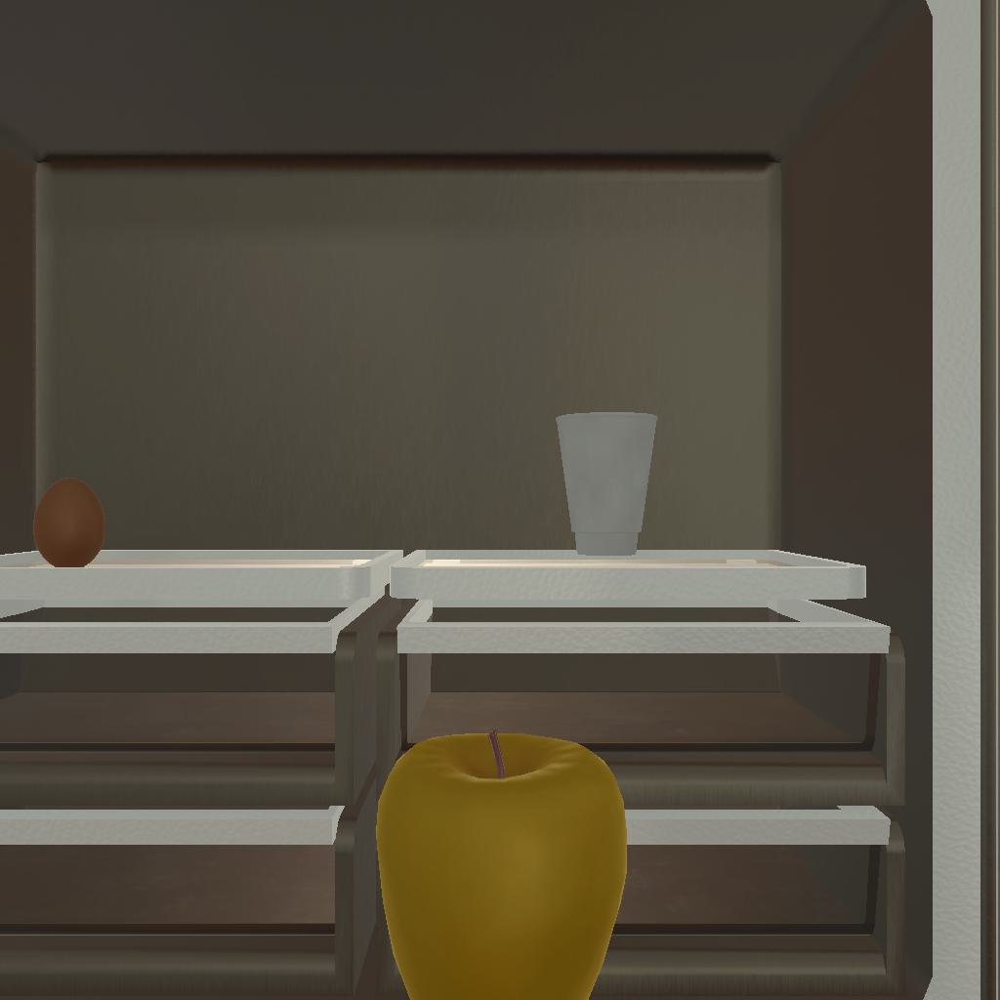
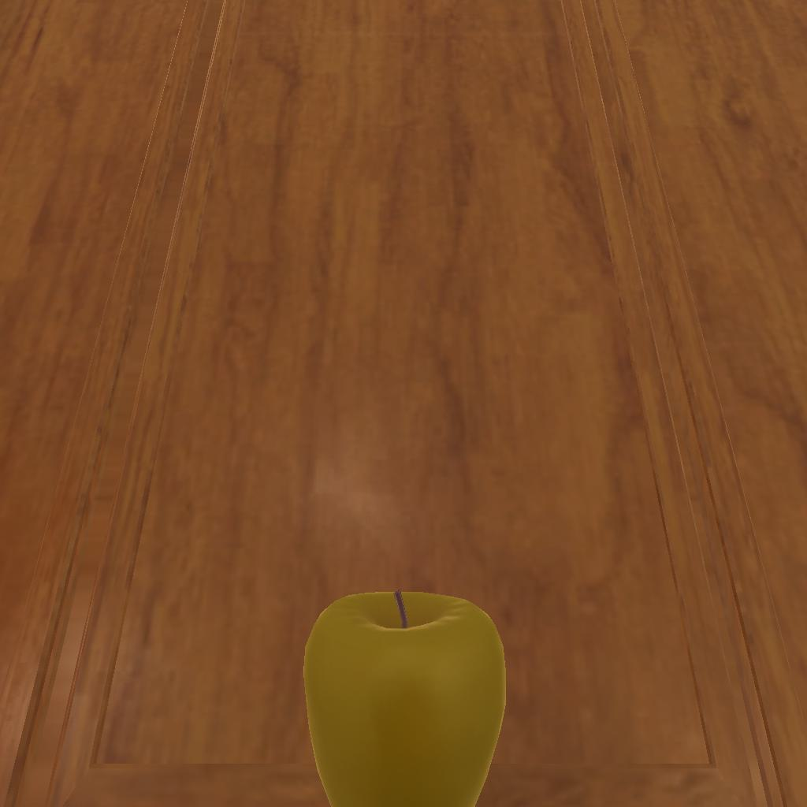

---------------------------------------------------------task: 24---------------------------------------------------------
--------------------------------------------------------------------------------------------------------------------------------------------------------------------
--------------------------------------------------------------------------------------------------------------------------------------------------------------------
Step:--------------------------------------------------------------------------13-------------------------------------------------------------------------------
----------------------------------------
VLM Prompt:
Image1:
Image2:
**Instruction**
1. Analyze the provided images to identify all visible household objects and compare the difference between images (e.h. whether the object is opened or not and taken on hand or not), focusing on those relevant to the task description "heat some tomato and put it in fridge."
2. Use the analysis of images and the task hint "The agent must find an object of the desired type, pick it up, go to a microwave, heat the object with the microwave, then find the correct location to place it, and put it down there. The agent does not need to use the microwave button or open the microwave to heat the object, and the agent just needs to do action that is "heat the object with the microwave"." to answer the question: what is the most reasonable action in the choices for the task description "heat some tomato and put it in fridge"?
3. Decide and write the answer using the template: The answer is: (i): , where i is the real number. If there is no desired object in images, search every place based on **Initial Observation** to find the object. And if no one is exactly correct, choose a similar answer.
**Initial Observation**
You are in the middle of a room. Looking quickly around you, you can see cabinet (1-14), countertop (1-2), microwave (1), drawer (1-5), sink (1), sinkbasin (1), coffeemachine (1), stoveburner (1-4), toaster (1), fridge (1), diningtable (1), garbagecan (1), safe (1)
**Answer Choices**
(1): go to cabinet 2
(2): go to cabinet 3
(3): go to countertop 1
(4): go to cabinet 4
(5): go to cabinet 5
(6): go to microwave 1
(7): go to cabinet 6
(8): go to drawer 1
(9): go to drawer 2
(10): go to drawer 3
(11): go to cabinet 7
(12): go to cabinet 8
(13): go to sink 1
(14): go to sinkbasin 1
(15): go to coffeemachine 1
(16): go to cabinet 9
(17): go to cabinet 10
(18): go to drawer 4
(19): go to cabinet 11
(20): go to stoveburner 1
(21): go to stoveburner 2
(22): go to stoveburner 3
(23): go to stoveburner 4
(24): go to cabinet 12
(25): go to toaster 1
(26): go to drawer 5
(27): go to countertop 2
(28): go to fridge 1
(29): go to cabinet 13
(30): go to cabinet 14
(31): go to diningtable 1
(32): go to garbagecan 1
(33): go to safe 1
(34): open cabinet 1
(35): close cabinet 1
(36): put apple 1 in/on cabinet 1
(37): examine apple 1
(38): examine cabinet 1
**Answer**
Let's think step by step by following the instructions.
----------------------------------------
----------------------------------------
Original Response:
Firstly, we need to identify all visible household objects from the images provided. In Image 1, we can see a yellow apple, an orange ball, and a white vase on white shelves. In Image 2, we only see the yellow apple from a top view. There is no tomato visible in either image.
Since the task is to "heat some tomato and put it in fridge," we need to find a tomato. Based on the Initial Observation, we should search every place to find the object. The places where a tomato might be stored include the fridge, cabinet, or countertop.
We can eliminate choices that are irrelevant to finding a tomato, such as going to appliances like the microwave (choice 6), coffeemachine (choice 15), toaster (choice 25), or stoveburners (choices 20-23). We can also eliminate choices related to objects not relevant to the task, such as examining or interacting with the apple (choices 36-38).
The most logical step would be to first find the tomato. As there is no cabinet or fridge visible in the images, we will follow the Initial Observation to decide where to search for the tomato.
The most reasonable action from the choices given is to go to the fridge (choice 28) to find the tomato since that's a common place where tomatoes are stored. Once the tomato is found, we can then proceed with the task of heating it in the microwave and placing it back in the fridge.
The answer is: (28): go to fridge 1.
----------------------------------------
----------------------------------------
>>> Refine Original VLM Response and Get Pure Action: go to fridge 1
----------------------------------------
-----------------------------------------------------------------
Running time: 15.284872770309448 seconds
Total Money: 12.478370000000004
-----------------------------------------------------------------
-----------------------------------------------------------------
Text Observation:You arrive at loc 28. The fridge 1 is open. On the fridge 1, you see a cup 1, and a egg 1.
-----------------------------------------------------------------
UNSUCCEED